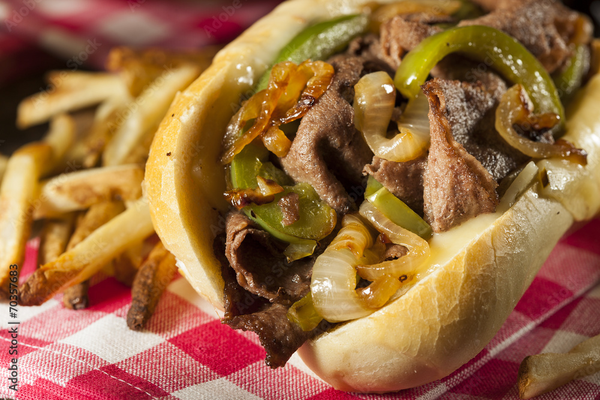

Cheese Quake Blizzard

A Cheese Quake Blizzard from DQ!
GET IT NOW!
Ingredients:
- 2 Green Pepper
- 1 Raw Yellow Onion
- Shaved Beef
- Butter
- Cheese of Choice
- Bread of Choice
- Seasonings of Choice
Steps:
- Cut up onion and peppers in prefered way.
- Set up two frying pans. One for the meat, the other for the veggies.
- Add butter to each of the pans and set them both to medium heat on the stovetop.
- Once the butter starts to melts add the onions and peppers to one of the pans and season as desired- allow to simmer and stir occasionally.
- Fry one side of the bread of your choosing - top and bottom pieces - until browned and crisp.
- Once the bread is finished add your steak to the now empty pan and season as desired.
- Reduce heat on the veggie pan once they have reached your desired temps.
- Once the steak is cooked to your liking add your cheese to the meat.
- Put everything together on your roll or bread and enjoy!